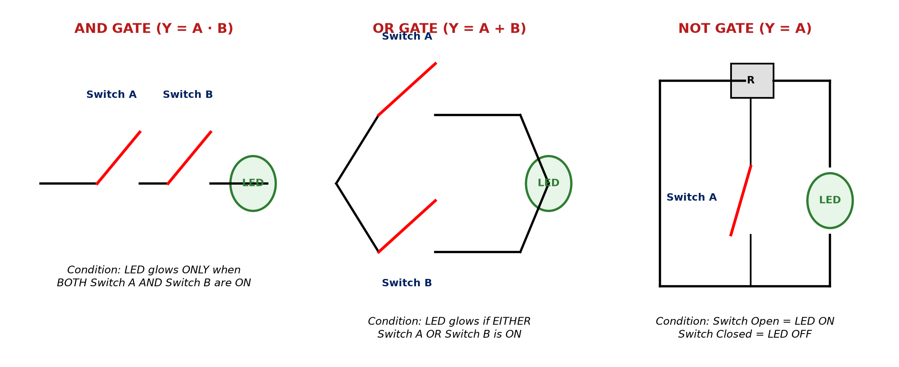

LOKSEVA E-SCHOOL
Pune
SESSION: 2026–2027
PHYSICS PROJECT
ROLL NO: - _____________________
CLASS: - 12TH SCIENCE
SUBMITTED TO:
SUBMITTED BY: Soham Patne
| Sr.no. | Content | Page no. |
|---|---|---|
| 1 | Acknowledgement | 4 |
| 2 | Aim of the Project | 5 |
| 3 | Apparatus and Components Required | 6 |
| 4 | Background of Digital Electronics | 7 |
| 5 | Fundamental Logic Gates & Boolean Algebra | 8 |
| 6 | Universal Logic Gates (NAND & NOR) | 9 |
| 7 | Circuit Diagram and Technical Layout | 10 |
| 8 | Experimental Assembly Procedure | 11 |
| 9 | Truth Tables and Observation Data | 12 |
| 10 | Practical Applications in Daily Life | 13 |
| 11 | Safety Precautions | 14 |
| 12 | Bibliography | 15 |
In the accomplishment of this project successfully, many people have bestowed upon me their blessings and heartfelt support. I utilize this opportunity to express my sincere appreciation to all who have contributed towards this investigatory study.
Primarily, I express my gratitude to the Almighty for bestowing the strength, clarity, and perseverance needed to bring this academic project to fruition.
I place on record my heartfelt gratitude to our respected Principal, Mr. ___________________________, for providing excellent institutional laboratory facilities and an inspiring academic atmosphere.
I express my profound gratitude to my esteemed Physics Teacher, Mr./Ms. ___________________________, whose meticulous guidance, scholarly insights, and constructive instructions have served as the vital cornerstone towards the completion of this project.
Finally, I thank my parents and classmates for their valuable suggestions, persistent moral support, and cooperation across every phase of this investigatory research.
In classical physics, signals are continuous and analog in nature, possessing infinite voltage values within a range. However, modern computers, calculators, smartphones, and automated industrial machines operate exclusively on digital electronic signals.
A digital signal has only two discrete, unambiguous voltage levels:
All digital microprocessors, memories, and supercomputers are constructed from millions of interconnected Logic Gates. Understanding these basic building blocks is the foundation of modern semiconductor physics.
An AND gate gives an output of 1 only when all of its inputs are 1. If any input is 0, the output remains 0. It corresponds to two switches connected in series.
Boolean Expression: Y = A · B (Read as: "Y equals A AND B")
An OR gate gives an output of 1 if either input A OR input B (or both) is 1. The output is 0 only when both inputs are 0. It corresponds to two switches in parallel.
Boolean Expression: Y = A + B (Read as: "Y equals A OR B")
A NOT gate has only one input and one output. It inverts the input signal: if input is 0, output is 1; if input is 1, output is 0.
Boolean Expression: Y = A̅ (Read as: "Y equals NOT A")
In digital electronics, NAND and NOR gates are known as Universal Gates because repeated combinations of either gate alone can realize all basic logical functions (AND, OR, NOT) without requiring any other gate type.
A NAND gate is an AND gate followed by an inverter. Its output is 0 only when all inputs are 1; for all other input combinations, the output is 1.
Boolean Expression: Y = (A · B)̅
A NOR gate is an OR gate followed by an inverter. Its output is 1 only when all inputs are 0; if any input is 1, the output is 0.
Boolean Expression: Y = (A + B)̅
Significance: Semiconductor manufacturers mass-produce NAND chips (e.g. Flash memory) because uniform NAND gate architectures simplify integrated circuit fabrication.

Experimental Truth Tables Verified on Circuit Board:
| AND Gate | ||
|---|---|---|
| A | B | Y |
| 0 | 0 | 0 |
| 0 | 1 | 0 |
| 1 | 0 | 0 |
| 1 | 1 | 1 |
| OR Gate | ||
|---|---|---|
| A | B | Y |
| 0 | 0 | 0 |
| 0 | 1 | 1 |
| 1 | 0 | 1 |
| 1 | 1 | 1 |
| NOT Gate | |
|---|---|
| A | Y |
| 0 | 1 |
| 1 | 0 |
| - | - |
| - | - |
Conclusion: All recorded outputs match the theoretical Boolean truth tables exactly. Digital logic gates function reliably with high noise immunity.
An industrial burglar alarm utilizes an OR gate: if an infrared beam is interrupted OR a window sensor triggers, the alarm bell rings immediately.
Heavy factory stamping machines use an AND gate with two physical start buttons placed 2 feet apart. The operator must press Button 1 AND Button 2 simultaneously with both hands, ensuring their hands cannot be caught inside the press.
Millions of interconnected NAND and NOR gates form the Arithmetic Logic Unit (ALU) inside CPUs, executing additions, logic comparisons, and program execution at gigahertz frequencies.
The electronic logic circuit diagrams, truth tables, and Boolean equations documented in this project report were compiled with reference to the following authoritative works:
https://www.allaboutcircuits.com).